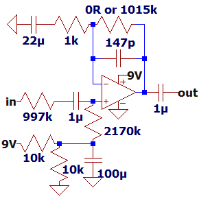
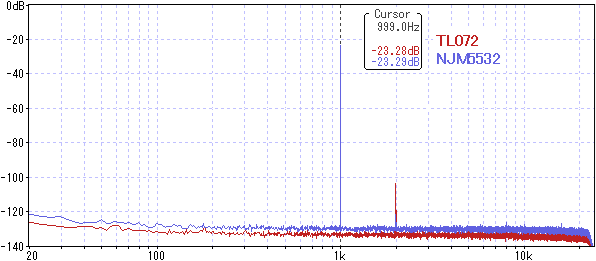
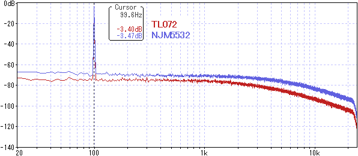

オペアンプの入力抵抗調査
2025年08月28日 カテゴリー：実験等
バイポーラトランジスタ入力のオペアンプの中には、入力バイアス電流が大きく入力抵抗が低いものがあります。なんとなくこういったオペアンプはエフェクターの入力部に使うのを避けていましたが、実際に問題があるのかどうかNJM5532を代表例として調査することにしました。
【入力抵抗】
NJM5532のデータシートには入力抵抗300kΩと記載があります。この入力抵抗は差動入力抵抗のことです。
差動入力抵抗
実際の非反転増幅回路では反転入力と非反転入力がほぼ同電位となるため、差動入力抵抗は300kΩよりはるかに高くなります（→ オペアンプの差動入力抵抗を計算で求めることはできますか？）。
同相入力抵抗
同相入力抵抗はデータシートに記載がありませんが、基本的には非常に高い値（数十MΩ以上）と考えてよいようです（→ Common mode impedance in operational amplifier）
最終的に非反転増幅回路の入力抵抗は以下の式で表され、高い値となります。
Rc // A×β×Rd （Rc：同相入力抵抗 A：オープン・ループ・ゲイン β：帰還率 Rd：差動入力抵抗）
詳細は下記参考ページをご参照ください。
【測定】
下図の回路で音量変化を確認します。NJM5532DDとTL072（UNISONIC製）との比較です。もしNJM5532の入力インピーダンスが低くなれば、TL072より音量が低くなります。
※ NJM5532ではバイアス電圧にずれが生じます（入力バイアス電流200nA × 2.2MΩ = 0.44V）。
ボルテージフォロワ

ほぼ同じ音量です。本題からは外れますが、TL072の方が低ノイズなのは意外でした。
約1000倍増幅
発振防止用の147pFのコンデンサがあり高音域が下がるため、約100Hzでの測定としました。

ごくわずかに音量低下があります。帰還率βが低い影響が出ているのかもしれません。また、周波数が高いとオープン・ループ・ゲインが低いため影響が出る可能性があります。
{kind=link}
{kind=link}
増幅率が極度に高い場合とバイアス電圧のずれに注意すれば、特に問題はなさそうだとわかりました。他のバイポーラ入力オペアンプでも同様だと考えられるので、オペアンプ選択の参考になればと思います。